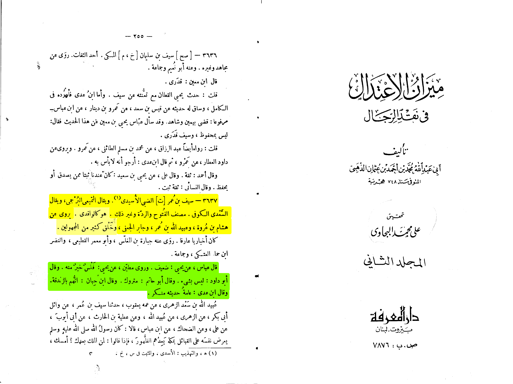
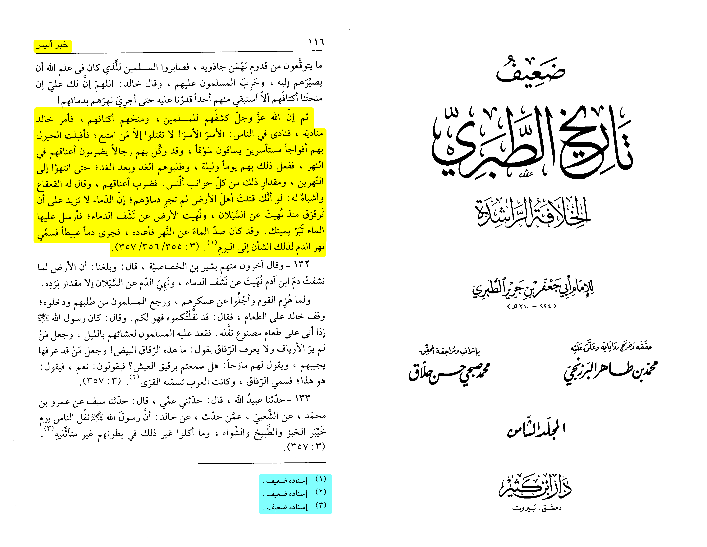
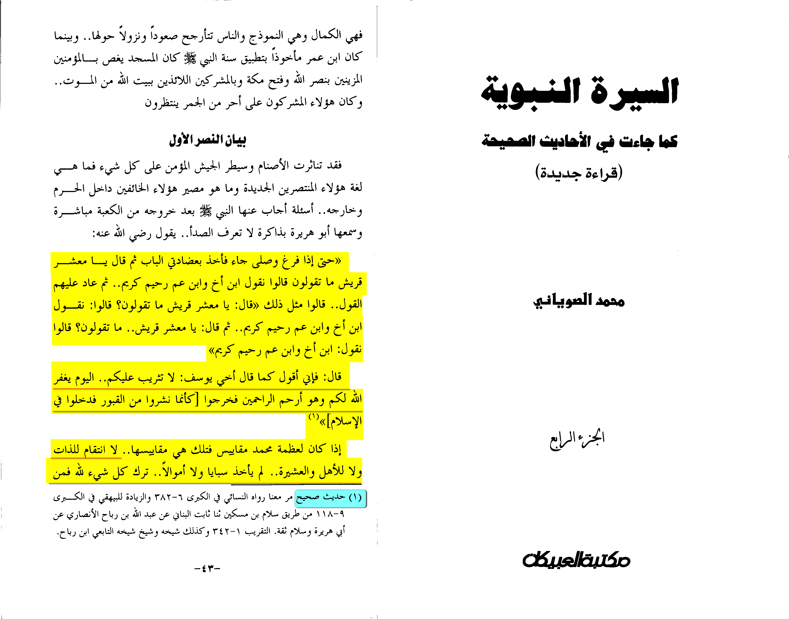
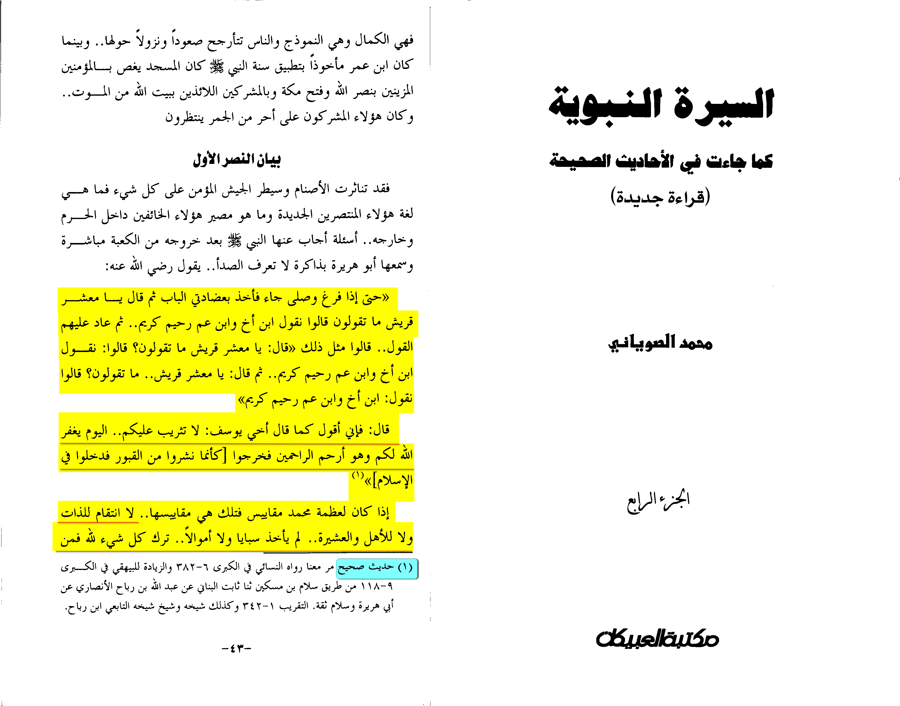
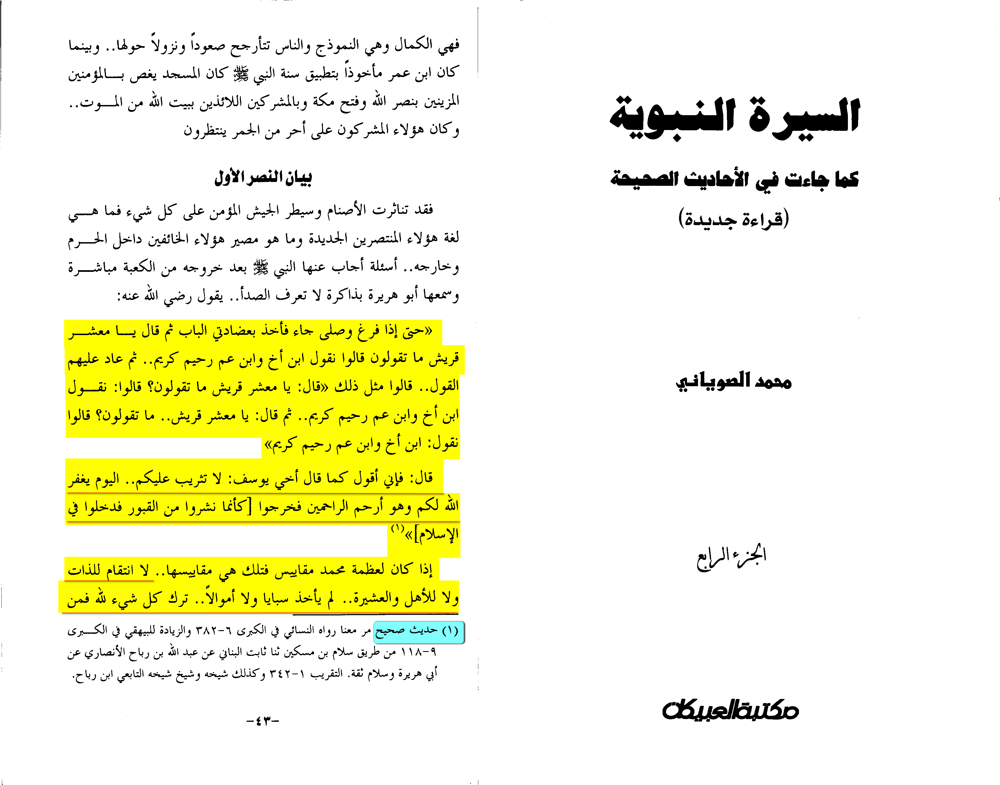

This story found in tarikh at-tabari says that Muslims have won a war against the infidels later on they got close to 100K of them beheaded them on a river that the river became red because of the blood.
However why didn’t they mention the authenticity
All the isnads (chains of transmission) other of those of unknown people come from this guy named Sayf bin ‘Umar al-Usaydi

Here in Mizan al-I’tidal of adh-dhahabi he writes in the transcript of Sayf bin ‘Umar al-Usaydi that he is like al-Wakidi (a known liar) he then goes on to mention people weakning him him. For example Yehia said that he is da’if (weak narrator) Abu Dawud said he is nothing Abu hatim said he is matrook (his hadith is rejected) Ibn Hibban said he has been accused of zandaqah (heresy) Ibn ‘Ady said that his hadith are munkar (rejected). And that nobody of ahlul ‘ilm (scholars) actually authenticated him.
Source: Mizan al-I’tidal adh-dhahabi vol.2, page#255

Here in Da’if tarikh at-tabari (revised version) it mentions all the path of these stories then classes them all as “isnad da’if” (weak chain of transmission)
Source: Da’if tarikh at-tabari volume 8, page 116.
Now is this logical yes it is permissible to kill a captive (only if he was a war massacre that is very rare and wasn't the case for those captives) but it is not liked and it was only done once by Allahs messenger even when his people who massacred and chased him for 13 years were under his hands did he kill them ? Lets find out
Al-Qasim ibn Salam reported: When his enemies came to the Ka’bah, they were holding onto its door and the Prophet, peace and blessings be upon him, said, “What do you say? What do you think?” They said three times, “We say you are the son of our brother.” The Prophet said, “I say to you as Joseph said to his brothers: No blame upon you today. Allah will forgive you, for he is the most merciful of the merciful.” (12:92)
In another narration, the Prophet said to them, “Go, you are free.”
Source: al-Sunan al-Kubrá 18275
Grade: Sahih (authentic) according to Al-Sawyani [Al-sirah Al-nabaweyah kama ja'at fi al-ahadith al-sahiha volume 4 page number 43]

The prophet forgave them all including Abu sufyan and this was stated by ash-shafi’i in his book al-UmmThe prophet forgave them all including Abu sufyan and this was stated by ash-shafi’i in his book al-Umm
 
The prophet forgave them all including Abu sufyan and this was stated by ash-shafi’i in his book al-UmmThe prophet forgave them all including Abu sufyan and this was stated by ash-shafi’i in his book al-Umm

The prophet forgave them all including Abu sufyan and this was stated by ash-shafi’i in his book al-UmmThe prophet forgave them all including Abu sufyan and this was stated by ash-shafi’i in his book al-Umm